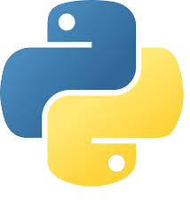

Faglige kompetencer
Jeg er en kreativ og matematisk person, som søger nye udfordringer som softwareudvikler. Jeg er hurtig til at lære nye teknologier at kende, og jeg har en særlig evne til at tænke ud af boksen, hvilket fremgår af flere af mine matematiske programmeringsprojekter. Jeg er den der får den gode idé og kan finde ud af at realisere den.
Mine evner inden for matematik har ført til, at jeg har vundet Georg Mohr to gange (en delt 21. plads og en delt 34. plads, se Georg Mohr-Konkurrencens vindere), hvilket viser at jeg kan kombinere logik med kreativitet.
Jeg har en særlig passion for data. Jeg er rigtig god til at bruge matematiske værktøjer samt programmering på kreative måder til at trække værdifuld information ud af data.
IT-kompetencer
Jeg har meget erfaring med Python

, især med NumPy og matplotlib , som jeg bl.a. har brugt til at lave
2D- og 3D-animationer med.
Jeg er ved at lære PHP og Lean .
Jeg har en god forståelse for HTML og CSS som vist på disse sider.
Og så har jeg tydeligvis også ret godt styr på Git  og GitHub , siden det er det jeg bruger til at hoste denne webside.
og GitHub , siden det er det jeg bruger til at hoste denne webside.
Uddannelse
Jeg er nybagt STX-student fra Det Kristne Gymnasium i Ringkøbing (2024). Mine særlige fag var Matematik A, Fysik A, Biologi A og Kemi B.
Mit studieretningsprojekt (SRP) handlede om vektorfelter, og hvordan de kan bruges i forbindelse med systemer af differentialligninger - i mit tilfælde, hvordan et pendul svinger. Databehandlingen indeholdt en masse interessante matematiske problemer, fx numerisk differentiering og integrering. Det sjoveste ved det hele var den tankegang, man skulle ind i for at få ”klemt” den relevante information ud af ens data. Jeg forsøgte bl.a. at opstille en model for friktionen i pendulet baseret på mine empiriske målinger. Det var der, jeg følte, jeg fik lov til at være mest kreativ.
Om et par år vil jeg gerne læse matematik, måske kombineret med datalogi. Jeg håber nemlig at komme til at arbejde med AI eller noget, der ligner.
Sprogkompetencer
Dansk: Flydende
Engelsk: Næsten flydende
Tysk: Lidt hakkende
Personligt
Jeg har altid været nysgerrig på verden, og derfor er flere af mine interesser også ret nørdede. Jeg kan sagtens bruge timer på at fordybe mig, hvis noget fanger min interesse. På den anden side kan også rigtig godt lide at være sammen med mine venner og familie (ikke sig det til dem).
Jeg er desuden glad for spille fodbold og sport generelt, og så kan jeg også godt lide at være ude i ”den vilde natur”. Det synes jeg er både spændende og afslappende, og en gang i mellem tager jeg på udflugt sammen med nogle venner, og så sover vi i skovbunden.
Mine interesser stikker lidt i alle retninger, men for tiden er jeg interesseret i fysik og kunstig intelligens. Og så er jeg nået til Harry Potter 6.